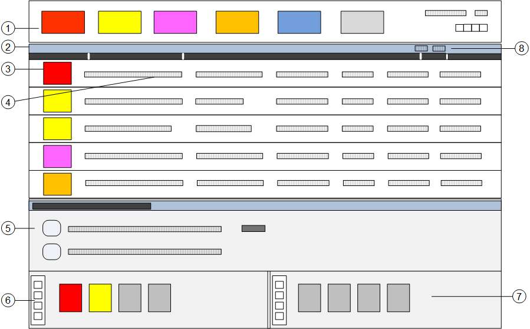

Event List
Overview
Event List displays all detected events with each event in a separate row. This window is your main starting point for dealing with events.
The Event List is available with two layouts: a Default Layout that shows events in the main working area, and an Advanced Layout that also shows the Contextual pane at the bottom of the screen.
For more details about available actions, see also Handling Events.
NOTE: The display of Event List is limited to 10000 event lines; if such limit is exceeded, the status bar of Event List will indicate the display limit and the total number of events detected (for example, 10000 of 50000).

Event List | ||
| Name | Description |
1 | Summary bar | Contains a set of event lamps that provide an overview of the events in the system. For more information, see Overview. |
2 | Title bar | Depending on what you select, the title bar of the Event List shows:
A contextual menu becomes available when you right-click the Event List column headers, and provides you with options to customize the columns that display in Event List, and to print out the whole list of events. |
3 | Event button | Graphic indicator of an event in the system. |
4 | Event descriptor | Contains the selection button, the details and the commands for the event currently being processed. |
5 | Contextual pane | Available in the advanced layout, it provides additional information, actions, and resources about the selected object. In the Operation and Extended Operation you can inspect the properties of the object, and view and execute any commands/actions available for that object. If you select multiple objects, these tabs display only the properties common to all objects, and properties having different values are marked with an asterisk. |
6 | Node Map | It provides a quick status summary of control panels and system component. It also allows for filtering Event List based on the Node Map selection. For more information, see Node Map. |
7 | Macro Viewer | It presents a selected list of control objects (macros and pseudo–points) that you can quickly command. For more information, see Macro Viewer. |
8 | Layout selection | The layout icons allow switching between base and advanced interface. |
Workflows
In the base layout, you can handle the events in the list. For more information, see Handling Events. Click the lamps in the Summary bar to filter the list on a specific event category.
In the advanced layout, you can select an event in the list and then operate in the Contextual pane, where the full set of properties and control commands of the alarmed object are available in the Operation and Extended Operation tabs.
Also, in the Node Map, select a control panel or a system component to populate the Contextual pane with its properties and control commands. Click Enable Event List interactions in the toolbar to filter the list on the selected control panel or system component. For more information, see Working with Node Map.
in the toolbar to filter the list on the selected control panel or system component. For more information, see Working with Node Map.
Event Status and Suggested Action
Event Status | Suggested Action | Icon in event button |
| Acknowledge event |
|
| Reset event |
|
| Reset event |
|
| Wait for condition |
|
Complete Operating Procedure | ||
| Suspend the event | - |